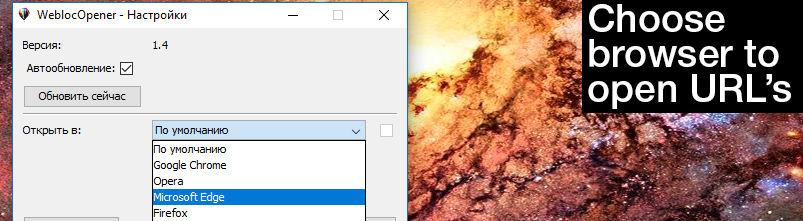
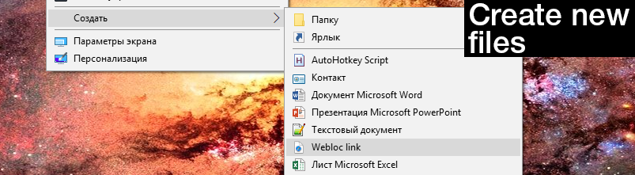
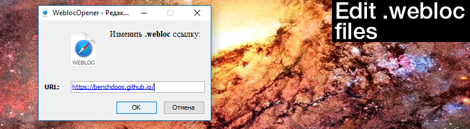
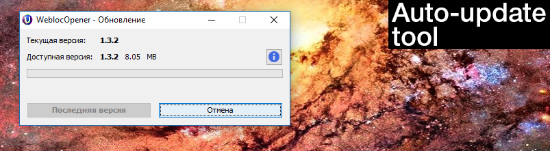
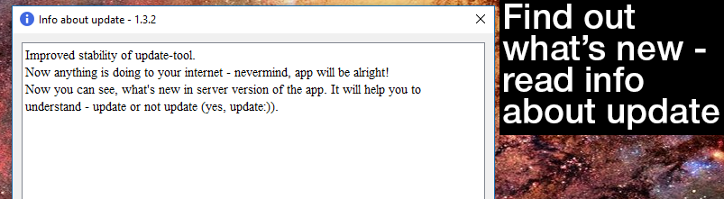

[Supernova] Update v1.4 - What's new?
Supported browsers:
- This update gives ability to change browser to open .webloc links.
- You can use some preset browser (if it's installed) or call browser by your own with custom call.
- Preset browsers have incognito (private) mode (most of them).
- You can use any custom browser by using syntax: file_path %site.
- Now info about update is move attractive and there is update name on top.
Introduction:
WeblocOpener is a simple way to open, edit, create MacOS Safari .webloc files on Windows.
System Requirements
- Operating system:
- Windows XP (SP3), Vista, 7, 8, 10
- In development
- CPU:
- Pentium 2 266MHz or better
- Memory:
- 128 MB RAM
- Hard drive:
- 25 MB free hard disk space
- Additional software:
- Java 8 required - Download
Features
- Get full access to MacOS Safari
.webloclink-files on Windows: open, edit and create. - Created files does not differ from MacOS original files, that means
.weblocfiles, created by WeblocOpener can be opened in MacOS Safari without any problems. - Easy to install and easy to use.
- Easy to update with auto-update app. Updater will help you to find out when new version is available, download and install the update.
What is .webloc file?
.webloc extension is usually means that in front of you is a MacOS Safari web-url.
Actually it is a text document, formated to property list - PLIST 1.0
(see).
You can open it with any text-editor (like notepad on Windows) to find out the url, saved in
.webloc file.
But if you need to open a big number of files or open them often - using text-editor wouldn't be the fastest and
the easiest solution.
So that's why this application was created - for these users.
What can do WeblocOpener?
-
Open MacOS Safari
.webloclink on Windows on your default browser. -
Open
.weblocfiles.
- Choose not default browser to open URL. Open in browser from presets or use custom. 
-
Create new
.weblocfiles. Created files are fully supported by Safari on MacOS and WeblocOpener on Windows.  -
Edit created files. Unlike
.weblocfiles on MacOS that can not be edited by default (except for text editors), WeblocOpener provides the ability to edit.weblocfiles on Windows.  - Auto-paste URL from clipboard when you created a new file. When you've just created an empty file, WeblocOpener helps you to paste copied URL into ULR-field. It automatically finds an URL in your clipboard.
- Auto-update tool will help you receive new updates just from the server. You should not check, if there is an update, WeblocOpener updater will notify you if there is a new version of the app. 
- Find out, what's new in new update. Use info icon on Updater to check it out. 
WeblocOpener for Windows is a simple application, that
will help you to open Safari .webloc links
on Windows.
WeblocOpener provides full support for this system, including: open, edit, create .webloc
files.
WeblocOpener provides ability to work with .webloc like on MacOS, even better.
Linux is coming... or not?
Hello! I think you have noticed that version for UNIX doesn't release for a long time, so I want to share with you some thoughts about this.
I got some troubles with auto-update tool on Unix systems, because the power of my laptop doesn't give too enough performance to run and develop the same time on Windows and Ubuntu.
WeblocOpener for Linux was going to be supported by most UNIX systems. Capability would be tested on Ubuntu 16.04.2 LTS and Debian 8.7.1.
But the main app is working. Should I release Unix version without auto-update tool? Yes and no. First of all the availability of the application allows you to open webloc links on UNIX systems. But on other side if there are some mistakes and intruders will find how to use the application to the detriment of users (is it possible? :D) it would be not a pleasant thing. Auto-updater tool will help you to update your application in time, so the risk goes to minimum.
Now changed orientation to stability improvements. Now auto-update tool works more stable. Unfortunately I didn't make download continuing, is there any sense to improve it for 8mb-12mb update?
As for MacOS I still have some interesting ideas that I want to improve. Comming back to hackintosh make me fill excitement by two reasons:
- MacOS is my fave system
- Hackintosh doesn't work properly now on my old laptop.
So now I can go in improvements on Windows, making new features or to go in development of Unix-oriented systems. In any reason I guess 100% I will develop version for MacOS with important abilities that OS does not provide. As for Unix - there is a question: should I develop it at all? At least auto-updater tool and full support?
Stay tuned. Subscribe on telegram WeblocOpener channel. Feedback about the application directly to me in telegram: @bench_doos
SurveyMaker
Stay tuned.
Спецификация CSS3 — это неоспоримое будущее в области декоративного оформления веб-страниц, и ее разработка еще далека от завершения. Большинство модулей все еще продолжает совершенствоваться и модифицироваться, и ни один браузер не поддерживает все модули. Это означает, что CSS3 испытывает такие же сложности, как и HTML5. Веб-разработчикам нужно решать, какие возможности использовать, а какие игнорировать, а также каким образом заполнить зияющие пробелы в браузерной поддержке.
CSS3 не является частью спецификации HTML5. Эти два стандарта были разработаны отдельно друг от друга, разными людьми, работающими в разное время в различных местах. Но даже организация W3C призывает веб-разработчиков использовать HTML5 и CSS3 вместе, как часть одной новой волны современного веб-дизайна.
Supported features
| Feature | |||
|---|---|---|---|
| Open | |||
| Edit | |||
| Create new | |||
| URL auto-paste | |||
| Auto-update | |||
| Open in not default browser |